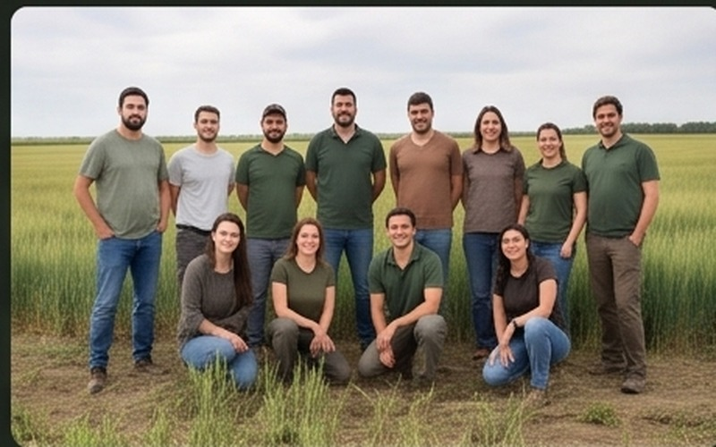

Biofísica de Interacciones Membrana-Ligando
Estudio fisicoquímico y molecular de las membranas de rizobacterias bajo condiciones de estrés osmótico y térmico, y caracterización de moléculas señal en la rizosfera.
El Laboratorio de Bioquímica y Biofísica de Sistemas (LBBS) es una unidad de investigación científica y tecnológica radicada en el Departamento de Ciencia y Tecnología de la Universidad Nacional de Quilmes (UNQ), integrada en el Centro de Bioquímica y Microbiología del Suelo (CBMS).
Nuestro equipo interdisciplinario combina enfoques de biofísica molecular, bioquímica vegetal, microbiología del suelo y biotecnología agrícola para desentrañar los mecanismos que regulan la adaptación bacteriana a estreses ambientales y optimizar el rendimiento de cultivos sostenibles.
Mantenemos una activa vinculación con el sistema científico nacional (CONICET, CIC, ANPCyT) y con el sector socio-productivo, brindando servicios tecnológicos de alto nivel y formando recursos humanos de excelencia de grado y posgrado.

Estudio fisicoquímico y molecular de las membranas de rizobacterias bajo condiciones de estrés osmótico y térmico, y caracterización de moléculas señal en la rizosfera.
Investigación de biopolímeros bacterianos y enzimas extracelulares implicadas en la dinámica de microagregados, retención hídrica y ciclaje de nutrientes edáficos.
Caracterización espectroscópica, termodinámica y estructural de proteínas y complejos macromoleculares vinculados a la tolerancia celular y bioemulsificación.
Espectroscopía de fluorescencia, dicroísmo circular y análisis de propiedades fisicoquímicas de sistemas macromoleculares.
Ensayos microbiológicos de recuento, viabilidad y compatibilidad de formulaciones agro-biotecnológicas.
Consultoría y vinculación tecnológica en diagnóstico de salud microbiológica de suelos y biofertilización.
Dictado de talleres y cursos especializados de posgrado en biofísica de membranas y bioquímica de suelos.
Universidad Nacional de Quilmes
Roque Sáenz Peña 352 (B1876BXD), Bernal, Pcia. de Buenos Aires, Argentina
¿Interesado/a en realizar tesis de grado, becas doctorales o colaboraciones científico-tecnológicas? Contactanos directamente por correo institucional.